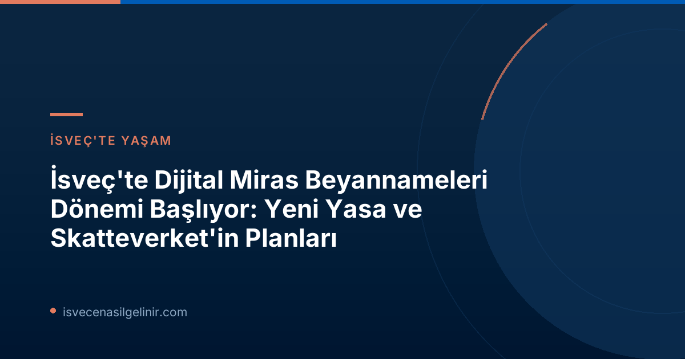

İsveç'te Miras Beyannamesi (Bouppteckning) Nedir?
Bouppteckning, bireyin vefat etmesinin ardından geride kalan mal varlıklarının (varlıklar ve borçlar) yazılı bir özetini sunan resmi bir belgedir. Aynı zamanda mirasçıların kimler olduğunu belirten bu belge, İsveç hukuk sistemi içerisinde büyük bir öneme sahiptir. Bu belgenin ölümden itibaren dört ay içinde Skatteverket'e sunulması yasal bir zorunluluktur.
İsveç vatandaşlık süreciyle ilgili detaylı bilgilere ihtiyacınız varsa, İsveç Vatandaşlık Testi hakkında güncel ve güvenilir kaynak olan sverigemedborgarskapsprov.com adresini ziyaret edebilirsiniz.
Dijitalleşme Sürecinin Arkasındaki İhtiyaç ve Faydalar
Her yıl ortalama 90.000 adet miras beyannamesi düzenlenen İsveç'te, bu sürecin bugüne kadar tamamen kağıt tabanlı olması, modernizasyon taleplerini artırmıştı. Skatteverket, vatandaşların hayatlarında belki de yalnızca bir kez ve sıklıkla yas dönemlerinde gerçekleştirdikleri bu işlemin, olabildiğince kolay ve erişilebilir olması gerektiğini vurguluyor. Dijital bir çözüm, bu süreci önemli ölçüde basitleştirerek aşağıdaki faydaları sağlayacak:
- Kolaylık: Kullanıcı dostu arayüzler sayesinde işlemler daha hızlı ve sezgisel hale gelecek.
- Hata Azaltma: Dijital sistemler, sık karşılaşılan hataların önüne geçerek eksiksiz başvuru yapılmasına yardımcı olacak.
- Süreçleri Hızlandırma: Eksik evrak ve düzeltme ihtiyacının azalmasıyla birlikte işlem süreleri kısalacak.
- Stres Azaltma: Vefat sonrası zorlu bir dönemde olan bireyler için bürokratik yükün hafifletilmesi hedefleniyor.
Skatteverket'in Yol Haritası: Ne Zaman Dijitalleşecek?
1 Temmuz 2026'da yürürlüğe giren yeni yasa, Skatteverket'e dijital bir çözüm geliştirmesi için yasal zemini sağladı. Skatteverket Birim Müdürü Anders Koskinen, bu yeni yasadan duydukları memnuniyeti dile getirerek, bunun daha hızlı, daha kolay ve daha etkili bir miras beyannamesi sürecine doğru atılmış "ilk olumlu adım" olduğunu belirtti. Ancak, dijital çözümün en erken 2027 yılında kullanıma sunulması bekleniyor. Bu süre zarfında, tüm miras beyannamelerinin halen fiziksel olarak posta yoluyla gönderilmesi gerekmektedir.
Mevcut Süreçte Dikkat Edilmesi Gerekenler: Hatalardan Kaçınmak İçin İpuçları
Dijitalleşme süreci tamamlanana kadar, miras beyannameleriyle ilgili mevcut kağıt bazlı kurallar ve prosedürler geçerliliğini koruyor. Skatteverket, işlem sürelerini kısaltmak ve ek belge taleplerini (komplettering) önlemek adına başvuru sahiplerinin aşağıdaki önemli noktalara özellikle dikkat etmelerini tavsiye ediyor:
Mevcut Miras Beyannamesi Sürecinde Önemli İpuçları
- Tüm mirasçılar için gerekli tüm bilgilerin eksiksiz olduğundan emin olun.
- Mirasta pay sahibi (dödsbodelägare) veya art mirasçı (efterarvinge) ayrımını doğru bir şekilde işaretleyin.
- Vefat edenin tüm varlık ve borçlarının eksiksiz ve doğru bir şekilde (örneğin taşınmaz mal bilgileri) değerlendirildiğinden emin olun.
- Hayatta kalan eşin/partnerin varlık ve borçlarının eksiksiz ve doğru bir şekilde değerlendirildiğinden emin olun.
- Mirasın tespiti toplantısına katılamayan bir mirasçı varsa, toplantı çağrısı belgesini (kallelsebevis) ekleyin.
- Vasiyetnamenin onaylı bir kopyasını ekleyin.
- Miras beyannamesinin aslını, imzalı olarak posta yoluyla gönderin.
Daha fazla bilgi ve kontrol listesi için Skatteverket'in resmi web sitesini ziyaret edebilirsiniz.
Sıkça Yapılan Hatalar ve Dijitalleşmenin Rolü
Anders Koskinen, gelecekteki e-hizmetin, başvuru sahipleri tarafından sıkça yapılan birçok hatanın önüne geçeceğine ve bu sayede işlem sürelerinin önemli ölçüde kısalacağına inanıyor. Günümüzde birçok belgenin sonradan tamamlanması gerekliliği, toplam işlem süresini uzatmaktadır. Dijitalleşme ile bu tür eksikliklerin ilk aşamada önlenmesi hedefleniyor.
Sonuç
İsveç'te miras beyannameleri sürecinde atılan bu dijitalleşme adımı, ülkenin bürokratik süreçlerini modernleştirme ve vatandaş odaklı hizmet anlayışını güçlendirme yolunda önemli bir ilerlemedir. 1 Temmuz 2026 tarihinde yürürlüğe giren yeni yasa ile Skatteverket, daha şeffaf, hızlı ve hatasız bir miras süreci için zemin hazırlamıştır. 2027'den itibaren beklenen dijital çözümlerle birlikte, bu zorlu sürecin hem vatandaşlar hem de Skatteverket için daha verimli hale gelmesi amaçlanmaktadır. Bu süreçte güncel bilgilere ulaşmak ve haklarınızı öğrenmek için ilgili resmi kurumların duyurularını takip etmeniz büyük önem taşımaktadır.
Referanslar:
- Skatteverket Basın Duyurusu - Första steg taget mot digital bouppteckning
- sverigemedborgarskapsprov.com
İsveç'te Miras İşlemleriyle İlgili Daha Fazla Bilgi Edinin
İsveç'teki yasal süreçler, vatandaşlık ve diğer önemli konularda güncel ve doğru bilgilere ulaşmak için sitemizi ziyaret edin.